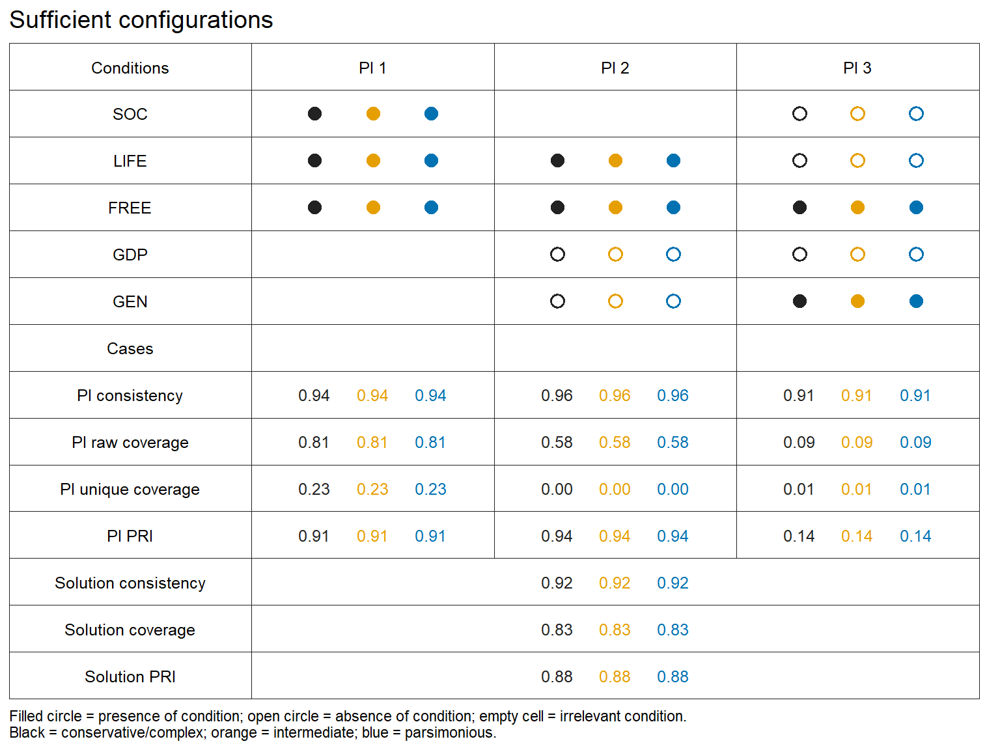
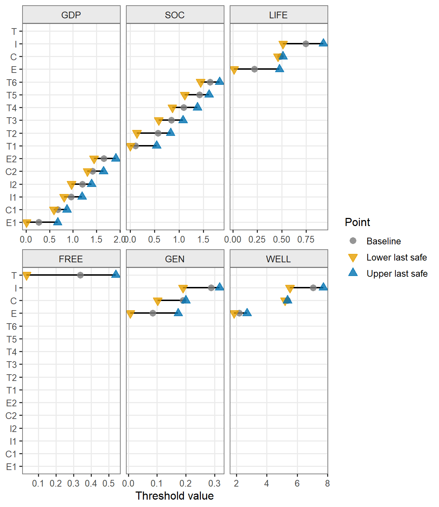
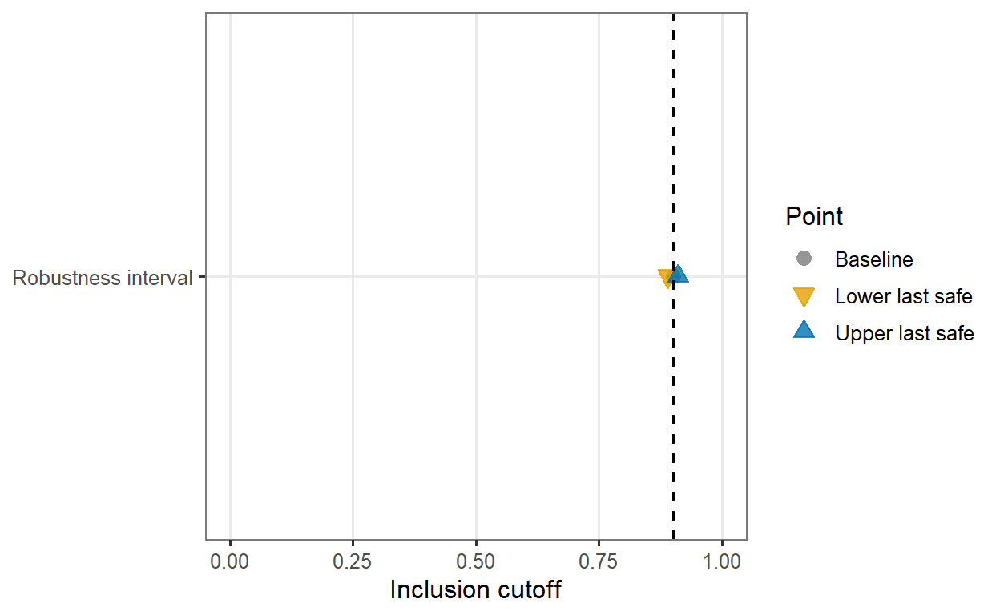
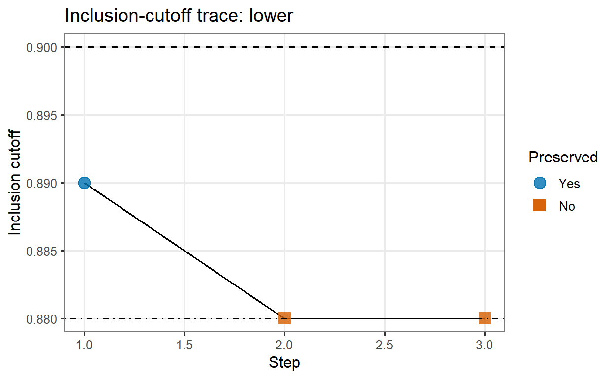
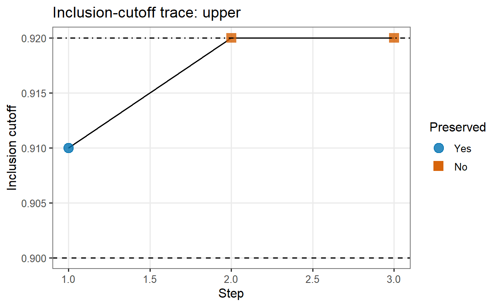
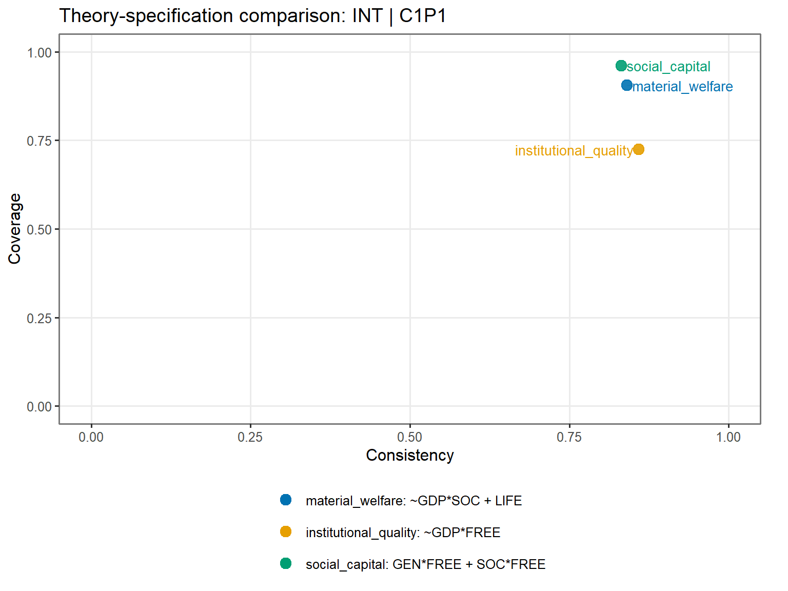

This paper introduces qcaERT, an R package for appraising robustness in Qualitative Comparative Analysis (QCA) (Ragin 2014). Building on the workflow supported by the QCA package (Dusa 2019), qcaERT treats robustness evaluation as an auditable process through diagnostics for calibration thresholds, truth table cutoffs, case composition, cluster heterogeneity, and theory-specific condition sets. The package aims to make robustness appraisal more detailed and transparent while remaining consistent with the epistemological underpinnings of QCA. By documenting perturbations and comparisons, it allows researchers to report solutions together with their behavior under pressure. The resulting record leaves meaningful interpretation to the analyst while giving readers a clearer basis for evaluating analytic choices, thereby strengthening confidence in both the results and the research design as a whole.
Robustness is a central concern in Qualitative Comparative Analysis (QCA). Beyond the usual preoccupations of any rigorous research design—a well-rounded, explorable research question; a clear understanding of the epistemological stance of the intended inference; a strong theory with enough observable implications; empirically relevant and measurable concepts; and a solid inferential strategy—researchers applying QCA must make, revise, and justify a range of analytically consequential decisions across the research process.
Case and condition selection, calibration anchors, consistency and frequency thresholds, the treatment of logical remainders—which, by itself, involves another set of meaningful choices—and decisions about contradictory truth table rows all shape which configurations are treated as sufficient and which solution formulas become available for substantive interpretation. Robustness appraisal, therefore, ponders about how far a QCA result depends on a plethora of analytic choices, and what happens when equally plausible alternatives are considered. Indeed, the extent of analyst discretion involved in QCA makes robustness appraisal less standardized, and often more interpretively demanding, than many diagnostic routines in regression-based designs.
With this in mind, this paper presents qcaERT as a transparency-oriented tool for appraising QCA robustness. Working on top of the workflow provided by the QCA package (Dusa 2019), its purpose is to help researchers move from less structured robustness claims to visible, explicit robustness records. By organizing perturbations, comparisons, diagnostics, and settings in a common workflow, the package supports a form of robustness assessment that is compatible with QCA’s demands while also strengthening credibility.
Early discussions of QCA robustness framed the issue primarily as sensitivity to the discretionary choices surrounding calibration anchors, consistency thresholds, and frequency cutoffs. Skaaning (2011) argued that QCA users cannot rely only on theoretical justification and case knowledge to rule out arbitrariness, for even when choices are substantively motivated, small changes may alter the resulting truth table and solution formula.
But this does not mean that robustness should be reduced to exact formula preservation. Schneider and Wagemann (2012) make this point in explicitly set-theoretic terms. They argue that robustness tests cannot simply copy the logic found in standard quantitative methods and, instead, has to be assessed in relation to QCA’s own logic of set relations. A solution may be considered robust when alternative specifications produce similar necessary or sufficient conditions, when consistency and coverage remain close enough not to change the substantive interpretation, and when the resulting formulas stand in a clear subset relation to one another. A solution may also change in its Boolean expression while still retaining a meaningful set relation to the original result, preserving its substantive implication, or affecting only marginal cases. Conversely, a formula that appears stable may still conceal fragile case classifications or problematic dependence on a narrow threshold.
For this reason, robustness in QCA is better appraised and presented as a matter of degree and interpretation than as a simple pass-or-fail property, and the relevant question, beyond “has the result changed?”, is how it changed, under which perturbations, and with what consequences for the cases and claims under scrutiny. This broader understanding is developed most explicitly in the robustness protocol proposed by Oana and Schneider (2024), which anchors robustness to QCA’s configurational heuristics (Ragin 2014). Among other contributions, their framework distinguishes between sensitivity ranges 1, fit-oriented robustness 2, and case-oriented robustness 3.
This logic is applied pedagogically in Qualitative Comparative Analysis Using R (Oana et al. 2021), where robustness assessment is linked to practical implementation in R through the SetMethods package (Oana and Schneider 2018), which provides an infrastructure for asking, in a demanding and substantively meaningful way, whether an initial solution withstands theoretically plausible adjustments.
Other perspectives place robustness within the broader requirements of research design and transparency. Thomann and Maggetti (2020) emphasize that robustness tests should be selected in relation to the type of QCA design, the mode of inference, and the researcher’s degree of case knowledge. A perturbation that is meaningful in a large-N, condition-oriented QCA may not have the same status in a small-N, case-oriented design. Schneider (2015) similarly connects robustness to transparency. Apart from reporting a final solution, researchers should also make visible the data, calibration decisions, truth table choices, and parameters of fit that allow readers to reconstruct the analysis. They further argue that QCA scholars should report meaningful robustness tests showing whether equally plausible analytic decisions would lead to substantively different results. From this standpoint, robustness appraisal is inseparable from transparent and reproducible reporting.
qcaERT starts from this methodological background but pursues a complementary purpose. The package does not replace SetMethods, nor does it reproduce its robustness protocol. Whereas SetMethods asks how the initial solution relates to a theoretically plausible space of alternative solutions, qcaERT presents how a monitored result behaves along traceable perturbation paths, preserving the diagnostic record through which instability appears. In other words, it treats robustness appraisal as a highly auditable perturbation workflow.
First, a baseline QCA analysis is specified; then, selected aspects of the analysis are varied; and, finally, the package records whether, where, and under what conditions the monitored result changes. Its contribution lies in making this process more explicit and informative, a logic that is organized around three diagnostic families: boundary, case-composition, and structured comparison. These families describe three ways of exerting pressure on a QCA result and scrutinizing what happens, as the package emphasizes robustness as a scannable trail of stability.
The point is not—in any way, shape, or form—to declare a solution robust by automation. The dialogue between ideas and evidence is, canonically, one of QCA’s cornerstones. The purpose of qcaERT is therefore not to replace it with mechanical robustness criteria, but to make that dialogue inspectable; robustness should slow interpretation down, not speed it up.
The package seeks to help researchers document the behavior of QCA results across perturbations that they judge to be substantively relevant. This record can then support interpretation: some instabilities may reveal serious dependence on theoretical discretion; others may be expected, localized, or substantively unproblematic.
The empirical sections are based on the 2025 World Happiness Report data (Helliwell et al. 2025), restricted to observations for 2024. The example should not be read as a theory-driven explanation of national happiness or well-being, for its purpose is entirely practical: to provide a single QCA workflow that is rich enough to expose the different kinds of analytic instability that qcaERT is designed to record.
The analysis uses the life-evaluation score as the outcome (WELL) across 145 observations and includes five reported components as conditions: log GDP per capita (GDP), social support (SOC), healthy life expectancy (LIFE), freedom to make life choices (FREE), and generosity (GEN).
# [PROVISIONAL DATA STEP]
# This load will be replaced with a simple data(whr_raw) once (or if) I get
# permission to add the World Happiness Report data to the package
load("whr_raw.RData")Calibration is the operation through which concepts become sets and cases acquire membership status in those sets. Before a truth table can be built, the researcher must translate raw empirical information into set-theoretic conditions. In an ideal scenario, this means deciding where cases become qualitatively in or out of each set on the basis of conceptual and empirical knowledge. This qualitative breakpoint is central in both crisp and fuzzy calibration: in crisp sets, it produces a binary distinction between membership and nonmembership; in direct fuzzy calibration, it defines the crossover point, where cases move from being more out than in to being more in than out of the set. Direct fuzzy calibration then requires at least two additional anchors, one for full membership and another for full nonmembership.
These choices could be considered the most critical step in applied QCA. The crossover point is pivotal, since it determines the qualitative status of cases and can change the truth table row to which they belong, which in turn may affect limited diversity, contradictory configurations, row consistency scores and, ultimately, which solution formulas become available for interpretation.
But this qualitative ideal of informed analyst discretion is not always met. In many applications, the researcher does not know where the relevant calibration thresholds lie. Theory may identify the concept without clear thresholds, and empirical knowledge may be too thin to locate them with confidence. In such situations, QCA::findTh() can be justified to anchor the thresholds (Dusa 2019) in a systematic way. It is also useful for this paper’s illustrative purpose. The chosen example includes direct fuzzy calibration with three and six anchors, indirect fuzzy calibration with ordered cutpoints, and crisp calibration, so that the baseline analysis covers several possible calibration decisions that can later be placed under diagnostic pressure.
Using these anchors, the raw indicators are therefore calibrated with QCA::calibrate() and then used to construct a truth table and a baseline set of QCA solutions. These baseline solutions become the reference against which qcaERT records changes in subsequent sections.
# Get thresholds with the default QCA::findTh() settings
# (complete hierarchical clustering and Euclidean distance)
WELL_th <- findTh(whr_raw$WELL, groups = 4)
GDP_th <- findTh(whr_raw$GDP, groups = 7)
SOC_th <- findTh(whr_raw$SOC, groups = 7)
LIFE_th <- findTh(whr_raw$LIFE, groups = 4)
FREE_th <- findTh(whr_raw$FREE, groups = 2)
GEN_th <- findTh(whr_raw$GEN, groups = 4)
# Build calibrated data frame
whr_calibrated <- whr_raw
whr_calibrated$WELL <- calibrate(whr_raw$WELL, type = "fuzzy", thresholds = WELL_th)
whr_calibrated$GDP <- calibrate(whr_raw$GDP, type = "fuzzy", thresholds = GDP_th)
whr_calibrated$SOC <- calibrate(whr_raw$SOC, type = "fuzzy", thresholds = SOC_th, method = "indirect")
whr_calibrated$LIFE <- calibrate(whr_raw$LIFE, type = "fuzzy", thresholds = LIFE_th)
whr_calibrated$FREE <- calibrate(whr_raw$FREE, type = "crisp", thresholds = FREE_th)
whr_calibrated$GEN <- calibrate(whr_raw$GEN, type = "fuzzy", thresholds = GEN_th)A substantial step in applied QCA is the analysis of necessity, usually carried out before the assessment of sufficiency. However, because the empirical demonstrations focuses on qcaERT’s diagnostics for sufficient configurations, the appraisal of necessary conditions is omitted from this paper.
For the baseline sufficiency analysis, the truth table is built through QCA::truthTable(), with incl.cut = 0.90 and n.cut = 1, so every configuration with at least one observation and an inclusion score of no less than 0.90 is coded as sufficient for the outcome.
# Set conditions and build the baseline truth table
whr_conds <- c("GDP", "SOC", "LIFE", "FREE", "GEN")
whr_tt <- truthTable(
whr_calibrated,
outcome = "WELL",
conditions = whr_conds,
incl.cut = 0.9,
n.cut = 1,
complete = TRUE,
show.cases = FALSE,
sort.by = c("incl", "n")
)The truth table is then minimized with QCA::minimize() under three solution types: conservative, intermediate and parsimonious. In this example, Enhanced Standard Analysis (Schneider and Wagemann 2012) governs the minimization procedure. The directional expectations for the intermediate solution specify the presence of each condition as contributing to the outcome (dir.exp = whr_solution_dir_exp), while exclude = findRows(whr_tt, type = 2) is applied to both the intermediate and parsimonious minimizations to prevent contradictory simplifying assumptions from entering either process.
# Get conservative solution
whr_sol_con <- minimize(
whr_tt,
details = TRUE
)
# Set directional expectations and get intermediate solution
whr_solution_dir_exp <- c("1", "1", "1", "1", "1")
whr_sol_int <- minimize(
whr_tt,
include = "?",
exclude = findRows(whr_tt, type = 2),
dir.exp = whr_solution_dir_exp,
details = TRUE
)
# Get parsimonious solutions
whr_sol_par <- minimize(
whr_tt,
include = "?",
exclude = findRows(whr_tt, type = 2),
details = TRUE
)Each of the three minimized objects carry its own solution terms and fit information, which can be displayed neatly with sol.df(), a qcaERT function that reorganizes this material into a single data frame.
In the call below, the conservative, intermediate, and parsimonious solutions are supplied together, and solution = "all" tells the function to extract every supplied solution type. The result is one row per extracted prime implicant, with columns identifying the solution type, model, intermediate branch when applicable, prime implicant expression, prime-implicant fit, and solution-level fit. Since include_cases = FALSE, case strings are not printed in the table, and digits = 3 rounds the numeric fit measures.
# Get solutions data frame
whr_solutions_df <- sol.df(
conservative = whr_sol_con,
intermediate = whr_sol_int,
parsimonious = whr_sol_par,
solution = "all",
include_cases = FALSE,
digits = 3
)
whr_solutions_df Solution Model Intermediate_CnPn Prime_Implicants Consistency_PI PRI_PI Raw_Coverage_PI Unique_Coverage_PI Solution_Consistency Solution_PRI Solution_Coverage Cases
1 Conservative - - SOC*LIFE*FREE 0.937 0.906 0.813 0.232 0.919 0.879 0.83 -
2 Conservative - - ~GDP*LIFE*FREE*~GEN 0.958 0.937 0.581 0.003 0.919 0.879 0.83 -
3 Conservative - - ~GDP*~SOC*~LIFE*FREE*GEN 0.910 0.138 0.086 0.013 0.919 0.879 0.83 -
4 Parsimonious - - SOC*LIFE*FREE 0.937 0.906 0.813 0.232 0.919 0.879 0.83 -
5 Parsimonious - - ~GDP*LIFE*FREE*~GEN 0.958 0.937 0.581 0.003 0.919 0.879 0.83 -
6 Parsimonious - - ~GDP*~SOC*~LIFE*FREE*GEN 0.910 0.138 0.086 0.013 0.919 0.879 0.83 -
7 Intermediate - C1P1 SOC*LIFE*FREE 0.937 0.906 0.813 0.232 0.919 0.879 0.83 -
8 Intermediate - C1P1 ~GDP*LIFE*FREE*~GEN 0.958 0.937 0.581 0.003 0.919 0.879 0.83 -
9 Intermediate - C1P1 ~GDP*~SOC*~LIFE*FREE*GEN 0.910 0.138 0.086 0.013 0.919 0.879 0.83 -sol.df() does not rerun the truth table or the minimization process, only making the baseline result inspectable in a form that can be printed, stored, compared, and passed to sol.chart(), which then renders it as a solution chart. The function reads the already constructed solution table and turns each prime implicant into a visual pattern of condition presence, condition absence, and irrelevance. It then arranges the chart so that related expressions across solution types can be read in the same column.
Filled circles indicate the presence of a condition, open circles indicate its absence, and empty cells indicate that the condition is not part of the corresponding prime implicant. Black is used for the conservative solution, orange for the intermediate one, and blue for the parsimonious. All colors used in the package are color-blind friendly.
# Render the baseline solution chart
sol.chart(whr_solutions_df)
The chart therefore offers a visual companion to the table, making the structure of the baseline solutions easier to inspect before later sections begin to ask how that structure changes under perturbation.
Boundary diagnostics examine the points at which analytic thresholds become relevant. calib.test(), incl.test(), and ncut.test() move calibration thresholds, inclusion cutoffs, and frequency cutoffs downward or upward, within admissible limits, until the monitored result changes, the search reaches a boundary, or the analysis fails. altset.test() extends this logic by generating alternative specifications that jointly vary calibration thresholds, inclusion cutoffs, and frequency cutoffs, then records whether the monitored result changes under those combined perturbations.
The first boundary diagnostic concerns the calibration thresholds themselves. calib.test() exposes what happens when one threshold used to create a calibrated set is moved while the rest of the QCA specification is held constant.
calib.test() reconstructs the baseline internally by recalibrating the specified condition columns from raw.data according to calib_spec, inserting those columns into calib.data, and applying outcome, conditions, incl.cut, n.cut, the requested solution type, any required directional expectations, and the exclusion rule; each perturbed run is then compared with this reconstructed baseline.
The function requires both raw.data and calib_spec because the calibrated table records how cases are positioned under the original calibration, while calib_spec supplies the rules for rebuilding those positions after a threshold is moved. Each calib_spec entry identifies the raw column from which the set is produced, the set type, the calibration method, and the threshold values that define the baseline calibration.
For the examples below, whr_calib_spec_conds records that GDP, LIFE, and GEN use direct fuzzy calibration, SOC uses indirect fuzzy calibration, and FREE uses crisp calibration. These differences determine which threshold positions can be tested: crisp calibration has one threshold, direct fuzzy calibration has either three or six named anchors, and indirect fuzzy calibration is treated as an ordered sequence of cutpoints.
whr_exclude stores the exclusion specification used later when exclusions are recomputed. list(type = 2) is passed to QCA::findRows(), where type = 2 identifies one type of untenable assumption. This, of course, is not the only possible recomputation rule. Because qcaERT forwards exclude_recompute to QCA::findRows(), all findRows() types can be used when the analyst supplies a valid specification: type = 0 for all untenable assumptions; type = 1 for subsets of a supplied expression; type = 2 for contradictory simplifying assumptions; and type = 3 for simultaneous subset relations.
# Store calibration specifications for qcaERT recalibration
whr_calib_spec_conds <- list(
GDP = list(raw = "GDP", type = "fuzzy", method = "direct", thresholds = GDP_th),
SOC = list(raw = "SOC", type = "fuzzy", method = "indirect", thresholds = SOC_th),
LIFE = list(raw = "LIFE", type = "fuzzy", method = "direct", thresholds = LIFE_th),
FREE = list(raw = "FREE", type = "crisp", method = "direct", thresholds = FREE_th),
GEN = list(raw = "GEN", type = "fuzzy", method = "direct", thresholds = GEN_th)
)
# Add the outcome for when it is also tested
whr_calib_spec_with_outcome <- whr_calib_spec_conds
whr_calib_spec_with_outcome$WELL <- list(
raw = "WELL",
type = "fuzzy",
method = "direct",
thresholds = WELL_th
)
# Store the exclusion rule used in robustness diagnostics
whr_exclude <- list(type = 2)The calibration diagnostic perturbs calibration one threshold position at a time. In the example below, test.conditions = whr_conds makes all five conditions eligible for testing, and test.outcome = TRUE adds the calibrated outcome WELL to the same diagnostic. The function can also be used more narrowly: test.conditions = "GDP" would test only one condition, while test.conditions = NULL together with test.outcome = TRUE would test only the outcome.
For each tested condition or outcome, qcaERT uses the threshold positions implied by its calibration specification. In a direct fuzzy set these positions are calibration anchors; in a crisp set the position is the crisp threshold; in an indirect fuzzy set they are ordered cutpoints. Each position is moved downward and upward in separate searches, while keeping the others constant. Along each direction, the function proposes a new threshold value, checks whether it is admissible, recalibrates the affected set when it is valid, rebuilds the truth table, reruns minimization, and compares the selected solution with its internally reconstructed baseline.
Because unit_step is not supplied, the size of each movement is computed from the calibration thresholds of the set being tested. For fuzzy sets, qcaERT takes the smallest distance between distinct thresholds and divides it by unit_step_divisor; here, with unit_step_divisor = 10, each move is one tenth of that smallest threshold gap. For crisp sets, the same automatic procedure uses the smaller distance between the threshold and the observed raw-data minimum or maximum, divided by unit_step_divisor.
A proposed threshold value is used only if it remains inside the observed raw-data range and preserves the ordering required by the calibration method. For example, in a three-anchor direct fuzzy set, the exclusion, crossover, and inclusion anchors must keep their proper order. If the next proposed value would make threshold positions overlap or switch order, the search stops at that feasibility boundary.
The treatment of excluded rows follows the same convention used in the other diagnostics detailed in this section. With exclude_mode = "recompute", qcaERT calls QCA::findRows() on each perturbed truth table using the specification stored in exclude_recompute; with exclude_mode = "static", it reuses the object supplied through exclude_static; and with exclude_mode = "none", minimization proceeds without an exclusion object.
Here, with solution = "all" and dir.exp supplied, conservative, parsimonious, and intermediate solutions are monitored separately. They are not collapsed into one combined judgment, so a calibration movement may affect one solution type before another, or stop for different reasons across solution types. The example uses result_shape = "long", which keeps one row per search and solution type. If the analyst prefers, result_shape = "wide" returns the same information in a wider table, placing one row per calibration search and solution-type-specific quantities in separate columns.
Calibration testing can be computationally demanding because the function repeatedly rebuilds the QCA workflow across tested sets, threshold positions, directions, steps, and monitored solution types.
# Test calibration-threshold sensitivity
whr_calib_all <- calib.test(
raw.data = whr_raw,
calib.data = whr_calibrated,
calib_spec = whr_calib_spec_with_outcome,
conditions = whr_conds,
test.conditions = whr_conds,
test.outcome = TRUE,
outcome = "WELL",
incl.cut = 0.9,
n.cut = 1,
solution = "all",
dir.exp = whr_solution_dir_exp,
exclude_mode = "recompute",
exclude_recompute = whr_exclude,
unit_step_divisor = 10,
max_steps = 20,
result_shape = "long"
)# Limit the printed table because of size constraints
print(whr_calib_all, max = 181)<calib_test>
Outcome test: calibration robustness
Solution: all
Monitored solutions: conservative, parsimonious, intermediate
which_M: 1
i_mode: all
Test conditions: GDP, SOC, LIFE, FREE, GEN
Test outcome: WELL
Max steps: 20
Result
solution_type condition type method anchor direction start last_safe first_failing step_unit steps total_delta pct_raw_range reason
conservative GDP f direct E1 lower 0.2675 0.0119 -0.0094 0.0213 12 -0.2556 12.603550 feasibility_boundary
conservative GDP f direct E1 upper 0.2675 0.4379 0.4592 0.0213 8 0.1704 8.402367 CON:formula_changed
conservative GDP f direct C1 lower 0.6790 0.5938 0.5725 0.0213 4 -0.0852 4.201183 CON:formula_changed
conservative GDP f direct C1 upper 0.6790 0.7003 0.7216 0.0213 1 0.0213 1.050296 CON:formula_changed
conservative GDP f direct I1 lower 0.9595 0.8104 0.7891 0.0213 7 -0.1491 7.352071 CON:formula_changed
conservative GDP f direct I1 upper 0.9595 1.1938 1.2151 0.0213 11 0.2343 11.553254 feasibility_boundary
conservative GDP f direct I2 lower 1.2025 0.9682 0.9469 0.0213 11 -0.2343 11.553254 feasibility_boundary
conservative GDP f direct I2 upper 1.2025 1.3090 1.3303 0.0213 5 0.1065 5.251479 CON:formula_changed
conservative GDP f direct C2 lower 1.4155 1.3303 1.3090 0.0213 4 -0.0852 4.201183 CON:formula_changed
conservative GDP f direct C2 upper 1.4155 1.4155 1.4368 0.0213 0 0.0000 0.000000 CON:formula_changed
conservative GDP f direct E2 lower 1.6580 1.4450 1.4237 0.0213 10 -0.2130 10.502959 CON:formula_changed
conservative GDP f direct E2 upper 1.6580 1.9136 1.9349 0.0213 12 0.2556 12.603550 CON:formula_changed
[ reached 'max' / getOption ("max.print") -- omitted 120 rows ]
Summary
Rows: 132
Conditions covered: GDP, SOC, LIFE, FREE, GEN, WELL
Bounds are available in x$bounds.The printed result is a record of these step-by-step searches. start is the baseline threshold value. last_safe is the last value known to preserve the monitored baseline solution, and first_failing, when present, is the first proposed value at which the search could no longer continue as an unchanged solution path. This may happen because the solution changed, the next movement would violate the calibration specification, or the QCA workflow could not be completed. steps, total_delta, and pct_raw_range report how far the search moved before it stopped.
Finally, the column reason records why the diagnostic stopped. When a search ends because the solution changed, the internal stop_reason is solution_change, but the printed table usually reports the more informative change_kind, such as CON:formula_changed or INT:selected_M_disappeared. Other reasons distinguish calibration feasibility boundaries, exhausted search budgets, truth table construction errors, exclusion-recomputation errors, and minimization errors. Baseline failures use the same logic with a baseline_ prefix, indicating that the comparison could not be established before perturbation testing began. The full stopping codes remain available in x$diagnostics.
The interval plot condenses this larger result for the selected solution type. Threshold positions with short intervals stopped close to their baseline values; positions with longer intervals moved farther before the search stopped. The interpretation still depends on the recorded reason, because a short interval caused by a solution change is different from a short interval caused by the boundary of the calibration specification. When a calib.test object contains more than one solution type, the plot requires the analyst to select which one should be displayed.
# Plot calibration intervals for the intermediate solution
plot(whr_calib_all, type = "interval", solution_type = "int")
Where calib.test() moved the set membership, incl.test() stresses the inclusion cutoff, which determines the truth table rows treated as sufficiently consistent for the outcome and, therefore, which configurations enter the logical minimization process. Generally, raising the threshold narrows the empirical basis of the solution, while lowering it admits more rows, risking weaker sufficiency claims.
The call below reconstructs the monitored baseline inside incl.test(). Because solution = "all" is combined with exclude_mode = "recompute", the conservative solution is assessed without exclusions, while the parsimonious and intermediate solutions are monitored with exclusions recomputed from each truth table. This same exclusion convention is used in the remaining boundary diagnostics in this section. The test seeks how far the incl.cut = 0.90 decision can be moved, downward or upward, before each selected solution type ceases to match its corresponding internally reconstructed baseline.
With step = 0.01, and max_steps = 10, qcaERT can inspect cutoffs down to 0.80 and up to 1.00, unless a search stops earlier. At each tested value, it rebuilds the truth table from the same calibrated data, keeps n.cut = 1, applies the same minimization settings, reruns the monitored minimizations, and compares each selected solution type with its own baseline counterpart.
# Test inclusion-cutoff sensitivity
whr_incl <- incl.test(
data = whr_calibrated,
outcome = "WELL",
conditions = whr_conds,
incl.cut = 0.9,
n.cut = 1,
solution = "all",
dir.exp = whr_solution_dir_exp,
exclude_mode = "recompute",
exclude_recompute = whr_exclude,
step = 0.01,
max_steps = 10,
result_shape = "long"
)For each solution type and direction, last_safe is the last inclusion cutoff known to preserve the selected baseline solution. If the first tested cutoff already changes the solution or triggers an error, last_safe remains the baseline incl.cut. first_failing, when present, is the next cutoff at which the search stopped because the solution changed, the proposed cutoff fell outside the admissible [0, 1] interval, or the QCA workflow could not be completed. For incl.test(), boundary stops are recorded as search_boundary_lower and search_boundary_upper, while exhausting the allowed number of movements is recorded as search_budget_exhausted.
whr_incl<incl_test>
Outcome test: incl.cut robustness
Solution: all
Monitored solutions: conservative, parsimonious, intermediate
which_M: 1
i_mode: all
Starting incl.cut: 0.9
Step size: 0.01
Max steps: 10
Result
solution_type direction start last_safe first_failing steps total_delta reason
conservative lower 0.9 0.89 0.88 1 -0.01 CON:formula_changed
conservative upper 0.9 0.91 0.92 1 0.01 CON:formula_changed
parsimonious lower 0.9 0.89 0.88 1 -0.01 PAR:formula_changed
parsimonious upper 0.9 0.91 0.92 1 0.01 PAR:formula_changed
intermediate lower 0.9 0.89 0.88 1 -0.01 INT:formula_changed
intermediate upper 0.9 0.91 0.92 1 0.01 INT:formula_changed
Summary
Stable intervals
solution_type lower upper width
CON 0.89 0.91 0.02
PAR 0.89 0.91 0.02
INT 0.89 0.91 0.02All qcaERT test objects can be printed directly, and their main tabular results can be extracted with as.data.frame(). The fuller diagnostic record, including the literal stopping codes, error sources, exclusion counts, and step traces, remains in the object itself, especially in whr_incl$diagnostics and whr_incl$by_direction.
While the interval plot filters the stored results to the intermediate solution and shows the lower and upper last-safe cutoffs around the baseline value, the two trace plots separate the lower and upper searches, showing which tested cutoff values preserved the selected intermediate solution and where each path stopped.
# Plot inclusion-cutoff intervals and traces
plot(whr_incl, type = "interval", solution_type = "intermediate")
plot(whr_incl, type = "trace", directions = "lower", solution_type = "intermediate")
plot(whr_incl, type = "trace", directions = "upper", solution_type = "intermediate")
Frequency cutoffs affect a different part of the sufficiency workflow than inclusion. After cases have been assigned to truth table rows and inclusion has been computed, QCA::truthTable() still requires a rule for how many cases must populate a row before that configuration counts as empirically supported, which is provided by (n.cut). Raising the frequency cutoff excludes rare configurations and can reduce the influence of possibly idiosyncratic rows, but it also means that more observed configurations are treated as remainders4.
The baseline specification used n.cut = 1, so any configuration represented by at least one case could be coded as sufficient for the outcome if its inclusion score reached incl.cut = 0.90.
The call below questions how the baseline solutions behave when the minimum row frequency is moved away from one case. At each tested value, qcaERT rebuilds the truth table from the same calibrated data, with the same outcome, conditions, and inclusion cutoff, but with a different n.cut. It then applies the same minimization settings and compares the selected conservative, parsimonious, and intermediate results with their own baseline counterparts. Because step = 1 and max_steps = 4, the upward search could in principle inspect n.cut values up to five unless the monitored solution changes or the QCA workflow stops earlier.
In this example, the lower search has no substantive room to move, as n.cut = 1 is already the lowest admissible value.
# Test frequency-cutoff sensitivity
whr_ncut <- ncut.test(
data = whr_calibrated,
outcome = "WELL",
conditions = whr_conds,
incl.cut = 0.9,
n.cut = 1,
solution = "all",
dir.exp = whr_solution_dir_exp,
exclude_mode = "recompute",
exclude_recompute = whr_exclude,
step = 1,
max_steps = 4,
result_shape = "long"
)whr_ncut<ncut_test>
Outcome test: n.cut robustness
Solution: all
Monitored solutions: conservative, parsimonious, intermediate
which_M: 1
i_mode: all
Starting n.cut: 1
Step size: 1
Max steps: 4
Upper limit: 145
Result
solution_type direction start last_safe first_failing steps total_delta reason
conservative lower 1 1 0 0 0 search_boundary_lower
conservative upper 1 1 2 0 0 CON:formula_changed
parsimonious lower 1 1 0 0 0 search_boundary_lower
parsimonious upper 1 1 2 0 0 PAR:formula_changed
intermediate lower 1 1 0 0 0 search_boundary_lower
intermediate upper 1 1 2 0 0 INT:formula_changed
Summary
Stable intervals
solution_type lower upper width
CON 1 1 0
PAR 1 1 0
INT 1 1 0Often, combined movement can produce forms of instability that remain hidden when choices are perturbed one at a time. A calibration threshold may move without changing the solution, and an inclusion cutoff may also be altered without affecting it—but together, the same two perturbations may modify row membership, row inclusion, limited diversity, exclusions, and the minimization result. The alternative-set diagnostic moves beyond the one-dimensional boundary logic used in the previous subsections.
altset.test() broadens it by seeking what happens when several parts of the QCA specification are allowed to vary together. The result is read as behavior across n_draws sampled alternative specifications.
The function first reconstructs the baseline from calib.data, using the same specifications as the reference analysis. It then uses raw.data and calib_spec to generate alternative calibrated datasets. In the call below, all five conditions are eligible for recalibration through test.conditions = whr_conds, and the outcome is included through test.outcome = TRUE. With no anchors_to_test argument supplied, every anchor implied by each calibration method can be sampled.
As before, the size of the calibration movement is computed separately for each set, since unit_step is absent and unit_step_divisor = 10. calib_max_steps = 20 then limits how far a sampled anchor may move from its baseline value, subject to the raw range and the ordering required by the calibration method. Each draw also samples one inclusion cutoff from the grid generated around incl.cut = 0.90 by incl_step = 0.01 and incl_max_steps = 10, along with one frequency cutoff from the grid generated around n.cut = 1 by ncut_step = 1 and ncut_max_steps = 4.
Candidate calibration movements that would fall outside the observed raw-data range or violate the required threshold ordering are not admitted as completed draws. Among completed draws, a sampled specification is rejected only if it reproduces the baseline across all sampled dimensions. Otherwise, qcaERT recalibrates the sampled sets with QCA::calibrate(), rebuilds the truth table with QCA::truthTable(), applies the same exclusion convention, reruns QCA::minimize(), and compares the selected solutions with the baseline record.
For this example, qcaERT records, for each draw, which solution types changed, which calibrated sets were moved, whether those sets were conditions or the outcome, and whether comparable fit quantities changed beyond fit_tol = 0.03. The fit tolerance affects only the classification of fit differences; it does not determine whether a Boolean solution expression has changed. n_draws = 20 fixes the number of sampled non-baseline specifications, and seed = 2026 makes the sampled sequence reproducible.
# Sample combined alternative specifications
whr_altset <- altset.test(
raw.data = whr_raw,
calib.data = whr_calibrated,
outcome = "WELL",
conditions = whr_conds,
calib_spec = whr_calib_spec_with_outcome,
test.conditions = whr_conds,
test.outcome = TRUE,
unit_step_divisor = 10,
calib_max_steps = 20,
incl.cut = 0.9,
incl_step = 0.01,
incl_max_steps = 10,
n.cut = 1,
ncut_step = 1,
ncut_max_steps = 4,
n_draws = 20,
seed = 2026,
solution = "all",
exclude_mode = "recompute",
exclude_recompute = whr_exclude,
dir.exp = whr_solution_dir_exp,
fit_tol = 0.03
)# Limit the printed table because of size constraints
print(whr_altset, max = 60)<altset_test>
Outcome test: alternative-set robustness
Solution: all
Monitored solutions: conservative, parsimonious, intermediate
which_M: 1
i_mode: all
Draws: 20
Baseline incl.cut: 0.9
Baseline n.cut: 1
Fit tolerance: 0.03
Test conditions: GDP, SOC, LIFE, FREE, GEN
Test outcome: WELL
Result
draw incl.cut n.cut status n_changed_sets changed_sets changed_roles solution_change fit_changed_types n_fit_deltas max_abs_fit_delta
1 0.80 5 ok 6 GDP, SOC, LIFE, FREE, GEN, WELL condition, outcome CON:formula_changed <NA> 0 NA
2 0.85 1 ok 6 GDP, SOC, LIFE, FREE, GEN, WELL condition, outcome CON:formula_changed | PAR:formula_changed | INT:formula_changed <NA> 0 NA
3 0.88 1 minimize_error 6 GDP, SOC, LIFE, FREE, GEN, WELL condition, outcome <NA> <NA> NA NA
4 0.89 5 minimize_error 6 GDP, SOC, LIFE, FREE, GEN, WELL condition, outcome <NA> <NA> NA NA
5 0.99 2 ok 6 GDP, SOC, LIFE, FREE, GEN, WELL condition, outcome CON:formula_changed <NA> 0 NA
[ reached 'max' / getOption ("max.print") -- omitted 15 rows ]
Summary
Draws: 20
Draws with any solution change: 16
Draws with any fit change: 0
Draws with fit comparison: 0
Solution match rate by solution type
solution_type match_rate
CON 0
PAR 0
INT 0The printed table provides a draw-level audit of sampled alternative specifications. changed_sets and changed_roles identify the calibration component of the sampled perturbation, while incl.cut and n.cut report the threshold choices drawn for truth table construction. solution_change records whether and how the selected solution signatures changed, and the fit columns indicate if matched fit information changed beyond the specified tolerance. The fuller object retains the baseline, detailed diagnostics, and draw-level components in whr_altset$baseline, whr_altset$diagnostics, and whr_altset$by_draw.
As with the previous diagnostics, this output shows how the monitored QCA results behave across the analyst-defined specification space. Substantive interpretation still depends on whether the sampled movements represent meaningful alternatives for the research problem and if the observed changes affect the claims the researcher wants the QCA solution to support.
Case-composition diagnostics shift the robustness focus from analytic thresholds to the observations that populate the analysis, addressing the dependence of a QCA result on the cases from which it is produced.
Adding or dropping cases is treated both as a matter of research design and as a possible robustness concern: case selection must be justified in relation to the reference population and scope conditions (Schneider 2015), and changes to the case pool may alter the configurations available for minimization rather than merely dampening the influence of unusual observations (Thomann and Maggetti 2020). The consequences of removing a case are thus not reducible to a generic outlier logic. Some effects on consistency and coverage follow from the type of case removed, but the effect on the solution formula depends on whether the reduced data change truth table rows, thresholds, or remainders (Schneider and Wagemann 2012).
In qcaERT, loo.test() operationalizes this concern as a leave-one-out diagnostic, while subsample.test() extends it to repeated partial-sample checks.
The leave-one-out diagnostic, loo.test(), reconstructs the full-sample baseline and then removes cases one at a time, comparing each reduced analysis with that baseline. Below, because the call does not restrict cases, every observation in whr_calibrated is tested. The case labels reported in the output come from the row names, as no separate case_labels vector is supplied.
With calib = "recompute", each reduced analysis removes the corresponding case from both whr_calibrated and raw.data, then rebuilds the calibrated outcome and conditions from the reduced raw dataset according to calib_spec. In the present specification, the stored calibration thresholds are reapplied after each deletion. Because the calibration specification used here contains no “findTh” instructions, the thresholds are not re-estimated with QCA::findTh(). Membership scores may nevertheless change where calibration itself depends on the reduced case pool, as with the indirectly calibrated SOC condition.
Once the reduced calibrated dataset has been rebuilt, the rest of the sufficiency workflow follows the baseline specification. QCA::truthTable() is called with the same outcome, the same five conditions, incl.cut = 0.90, and n.cut = 1. For parsimonious and intermediate minimization, excluded rows are recomputed from each reduced truth table through QCA::findRows(), using the rule stored in whr_exclude. The minimizations are then rerun with QCA::minimize(); and since solution = "all" and directional expectations are supplied, conservative, parsimonious, and intermediate solutions are monitored as separate comparison targets, preserving the distinction among solution types.
The comparison proceeds in two steps. qcaERT first contrasts the selected solution signatures from each reduced run with the corresponding full-sample signatures. It then compares the selected fit measures—here inclS, PRI, and covS. The tolerance fit_tol = 0.03 applies only to the fit comparison. Boolean-expression changes are determined separately through signature comparison.
# Run leave-one-out diagnostics
whr_loo <- loo.test(
data = whr_calibrated,
outcome = "WELL",
conditions = whr_conds,
calib = "recompute",
raw.data = whr_raw,
calib_spec = whr_calib_spec_with_outcome,
incl.cut = 0.9,
n.cut = 1,
solution = "all",
exclude_mode = "recompute",
exclude_recompute = whr_exclude,
dir.exp = whr_solution_dir_exp,
fit_measures = c("inclS", "PRI", "covS"),
fit_tol = 0.03
)The table provides a case-by-case record of how each deletion affects the monitored workflow. status indicates whether the reduced analysis could be compared with the baseline. solution_change identifies changes in selected solution expressions, while fit_changed_types, n_fit_deltas, and max_abs_fit_delta summarize movement in the monitored fit measures.
# Limit the printed table because of size constraints
print(whr_loo, max = 60)<loo_test>
Outcome test: leave-one-out robustness
Solution: all
Monitored solutions: conservative, parsimonious, intermediate
which_M: 1
i_mode: all
Cases tested: 145
Fit measures: inclS, PRI, covS
Result
row_index case_label status solution_change fit_changed_types n_fit_deltas max_abs_fit_delta
1 Afghanistan ok CON:formula_changed | PAR:formula_changed | INT:formula_changed <NA> 0 0
2 Albania ok <NA> <NA> 0 0
3 Algeria ok <NA> <NA> 0 0
4 Argentina ok <NA> <NA> 0 0
5 Armenia ok <NA> <NA> 0 0
6 Australia ok <NA> <NA> 0 0
7 Austria ok <NA> <NA> 0 0
8 Azerbaijan ok CON:formula_changed | PAR:formula_changed | INT:formula_changed <NA> 0 0
[ reached 'max' / getOption ("max.print") -- omitted 137 rows ]
Summary
Successful runs: 145/145
Solution changes: 8
Fit changes: 1
Non-ok runs: 0
Cases with solution changes: Afghanistan, Azerbaijan, Bangladesh, Benin, Ethiopia, Kosovo, Somalia, TürkiyeThe diagnostic documents the effects of case deletion, showing whether removing each case changes the monitored QCA result and where that change appears in the recorded workflow. The fuller record remains in whr_loo$diagnostics and whr_loo$by_case, where the reduced run, recalibration record, exclusions, solution comparison, and fit deltas can be inspected for any specific observation.
subsample.test() applies the same logic to a more demanding case-composition diagnostic by repeatedly rebuilding the analysis from partial samples and recording how often the monitored solution is preserved.
It is important to emphasize that the function should not be seen as an attempt to import a statistical bootstrap logic into QCA. It provides an audit-oriented stress test whose interpretation must remain design-sensitive, being best understood as a stringent diagnostic of sample-composition sensitivity—in small-N, case-oriented QCA, partial-sample reconstruction would be substantively uninformative; whereas in larger-N or condition-oriented analyses it can help researchers assess whether the solution depends on the full case pool and the configurations it populates.
With that in mind, the call below draws ten subsamples without replacement. With sample_prop = 0.8, the realized subsample size is computed as round(0.8 * nrow(whr_calibrated)); in the present data, this corresponds to 116 sampled observations and 29 held-out observations per replication.
The subsamples are stratified by a user-defined grouping. For the purpose of this diagnostic, strata classifies cases by their position relative to the outcome crossover: cases with WELL >= 0.5 are assigned to high_WELL, and cases with WELL < 0.5 are assigned to low_WELL. With stratify = "user", qcaERT draws proportionally from these supplied groups, preserving the high/low outcome composition as closely as the integer subsample size permits. With the present group sizes, this allocation retains cases from both sides of the crossover in every replication, preventing an 80% draw from overrepresenting either high- or low-membership cases by chance. The procedure differs in principle from stratify = "outcome", which uses a crisp outcome itself as the source of stratification.
For each sampled dataset, qcaERT reconstructs the analysis from sampled raw rows. With calib = "recompute", the same sampled cases are drawn from raw.data, and the calibrated outcome and conditions are rebuilt from the sampled raw data according to calib_spec. As in the leave-one-out diagnostic, the stored calibration thresholds are reapplied here; re-estimation with QCA::findTh() occurs only when the calibration specification contains findTh instructions. Membership scores may still vary when the calibration method is itself estimated from the sampled data, as with the indirectly calibrated SOC condition.
The reconstructed subsample is then passed through the same sufficiency workflow used for the full-sample baseline. QCA::truthTable() is called with the same outcome, conditions, incl.cut = 0.90, and n.cut = 1. Under exclude_mode = "recompute", excluded rows are recomputed from each subsample truth table through QCA::findRows(), and the minimizations are rerun with QCA::minimize().
# Define strata around the outcome crossover
strata <- ifelse(whr_calibrated$WELL >= 0.5, "high_WELL", "low_WELL")
# Run repeated subsample diagnostics
whr_subsample <- subsample.test(
data = whr_calibrated,
outcome = "WELL",
conditions = whr_conds,
calib = "recompute",
raw.data = whr_raw,
calib_spec = whr_calib_spec_with_outcome,
sample_prop = 0.8,
reps = 10,
stratify = "user",
strata = strata,
seed = 2026,
incl.cut = 0.9,
n.cut = 1,
solution = "all",
exclude_mode = "recompute",
exclude_recompute = whr_exclude,
dir.exp = whr_solution_dir_exp,
fit_measures = c("inclS", "PRI", "covS"),
fit_tol = 0.02
)The comparison records formula preservation and fit movement. exact_match_baseline indicates whether the selected solution signatures in a subsample match the full-sample baseline. The fit columns compare inclS, PRI, and covS, with a fit change recorded, here, only when the difference exceeds fit_tol = 0.02.
term_jaccard_baseline summarizes how much of the baseline term inventory reappears in the subsample result. qcaERT extracts the selected solution terms from the monitored solution types, forms the set of distinct terms, and computes the ratio of shared terms to all terms appearing in either the baseline or the subsample. It should be interpreted only as a compact term-level resemblance measure, without implying subset relations, fit, or substantive equivalence.
whr_subsample<subsample_test>
Outcome test: subsample robustness
Solution: all
Monitored solutions: conservative, parsimonious, intermediate
which_M: 1
i_mode: all
Replications: 10
Sample size: 116
Sample proportion: 0.8
Stratification: user
Fit measures: inclS, PRI, covS
Result
rep n_sample n_holdout status exact_match_baseline term_jaccard_baseline solution_change fit_changed_types n_fit_deltas max_abs_fit_delta
1 116 29 ok FALSE 0.6666667 CON:formula_changed | PAR:formula_changed | INT:formula_changed CON | PAR | INT 6 0.02296898
2 116 29 ok FALSE 0.3333333 CON:formula_changed | PAR:formula_changed | INT:formula_changed CON | PAR | INT 3 0.03203495
3 116 29 ok FALSE 0.2000000 CON:formula_changed | PAR:formula_changed | INT:formula_changed <NA> 0 0.00000000
4 116 29 ok FALSE 0.2000000 CON:formula_changed | PAR:formula_changed | INT:formula_changed CON | INT 2 0.02553135
5 116 29 ok FALSE 0.3333333 CON:formula_changed | PAR:formula_changed | INT:formula_changed CON | PAR | INT 6 0.02977214
6 116 29 ok FALSE 0.6666667 CON:formula_changed | PAR:formula_changed | INT:formula_changed <NA> 0 0.00000000
7 116 29 ok FALSE 0.2000000 CON:formula_changed | PAR:formula_changed | INT:formula_changed <NA> 0 0.00000000
8 116 29 ok FALSE 0.5000000 PAR:formula_changed | INT:formula_changed PAR | INT 9 NA
9 116 29 ok FALSE 0.5000000 CON:formula_changed | PAR:formula_changed | INT:formula_changed <NA> 0 0.00000000
10 116 29 ok FALSE 0.6666667 CON:formula_changed | PAR:formula_changed | INT:formula_changed <NA> 0 0.00000000
Summary
Successful runs: 10/10
Runs with any solution change: 10
Runs with any fit change: 5
Non-ok runs: 0
Mean combined term-set Jaccard vs baseline: 0.4266667
Exact baseline matches by solution type
solution_type exact successful proportion
CON 1 10 0.1
PAR 0 10 0.0
INT 0 10 0.0The table gives one row per subsample replication, reporting the realized sample and holdout sizes, run status, exact-match indicator, term-resemblance score, solution-change classification, and fit-change summary. The fuller evidence remains in whr_subsample$summary and whr_subsample$by_run. The summary stores exact-match rates, term stability, fit stability, similarity measures, and calibration summaries, while each run records the sampled and held-out cases, strata counts, recalibration details, exclusions, solution comparison, and fit deltas.
Structured comparison diagnostics address situations in which the relevant perturbation takes the form of a structured alternative to the baseline analysis instead of movement along a single threshold or case dimension. While cluster.test() examines whether the baseline result behaves similarly across groups, clusters, or repeated units, theory.test() extends structured comparison to theoretically motivated specifications.
cluster.test() begins with the pooled QCA result to uncover whether the selected configurations have similar empirical standing across substantively defined groups. The concern is that a pooled sufficiency claim may conceal heterogeneity, with a configuration appearing consistent or well covered in the aggregate while being concentrated in, or driven by, one part of the case pool.
In the example below, the grouping variable is constructed from the raw GDP contribution. Cases at or above the median are assigned to the higher-GDP group, and cases below the median are assigned to the lower-GDP group. This grouping functions solely as a comparison device, exposing if the pooled configurations extracted from the baseline truth table display different consistency and coverage patterns across the two groups.
Because the truth table is built before cluster.test() is called, the function operates from a supplied QCA::truthTable() object instead of reconstructing the workflow internally. This marks an important difference from the preceding diagnostics, since cluster.test() takes the pooled truth table as given, minimizes it under the requested solution controls, extracts the selected configurations from the resulting QCA::minimize() objects, and computes the fit of those same configurations within each cluster.
The same design explains how exclusions are handled. The perturbation diagnostics use exclude_mode and exclude_recompute to determine how exclusions are recalculated during workflow reconstruction; cluster.test() receives an already constructed truth table, so exclusions are passed directly to QCA::minimize(). Here, exclude = QCA::findRows(whr_tt_cluster, type = 2) applies the same exclusion rule used in the baseline intermediate and parsimonious minimizations.
In this example, for each selected configuration, qcaERT computes pooled consistency and coverage and then recomputes those fit quantities separately inside each GDP_group. The resulting deltas measure how far each group-specific fit value lies from the pooled value. When the selected result contains multiple solution terms, the diagnostic also stores term-level rows, so that heterogeneity can be inspected both for the selected result as a whole and, where applicable, for its component terms.
Since GDP_group is used only as a grouping variable, the diagnostic is limited to between-cluster comparisons. cluster.test() also accepts a unit_id argument when the same unit appears in more than one cluster, in which case qcaERT can compute within-unit fit diagnostics for the selected pooled configurations.
whr_cluster <- whr_calibrated
# Define a grouping variable for cluster comparison
whr_cluster$GDP_group <- ifelse(
whr_raw$GDP >= median(whr_raw$GDP),
"high GDP contribution",
"low GDP contribution"
)
# Build the truth table supplied to cluster.test()
whr_tt_cluster <- truthTable(
whr_cluster,
outcome = "WELL",
conditions = whr_conds,
incl.cut = 0.9,
n.cut = 1,
complete = TRUE,
show.cases = FALSE,
sort.by = c("incl", "n")
)# Compare pooled configurations across GDP groups
whr_cluster_test <- cluster.test(
data = whr_cluster,
tt = whr_tt_cluster,
cluster_id = "GDP_group",
solution = "all",
exclude = findRows(whr_tt_cluster, type = 2),
dir.exp = whr_solution_dir_exp
)The returned object is structured differently from the preceding diagnostics because the evidence has more than one natural table. whr_cluster_test$results$overview gives one row per selected configuration, including pooled fit, the largest cluster-level deviations, and the clusters where those deviations occur. whr_cluster_test$results$clusters gives the cluster-level consistency and coverage values themselves, including component-level rows when a selected configuration has multiple terms. The fuller records remain in whr_cluster_test$diagnostics and whr_cluster_test$by_cluster.
whr_cluster_test<cluster_test>
Outcome test: cluster heterogeneity
Solution: all
Monitored solutions: conservative, parsimonious, intermediate
which_M: 1
i_mode: all
Cluster id: GDP_group
Necessity mode: FALSE
Overview
solution_type configuration status pooled_cons pooled_cov worst_consistency_cluster max_delta_cons worst_coverage_cluster max_delta_cov within_units
CON conservative:~GDP*~SOC*~LIFE*FREE*GEN+~GDP*LIFE*FREE*~GEN+SOC*LIFE*FREE ok 0.919 0.830 low GDP contribution 0.069 low GDP contribution 0.142 not available
PAR parsimonious:~GDP*~SOC*~LIFE*FREE*GEN+~GDP*LIFE*FREE*~GEN+SOC*LIFE*FREE ok 0.919 0.830 low GDP contribution 0.069 low GDP contribution 0.142 not available
INT C1P1:~GDP*~SOC*~LIFE*FREE*GEN+~GDP*LIFE*FREE*~GEN+SOC*LIFE*FREE ok 0.919 0.830 low GDP contribution 0.069 low GDP contribution 0.142 not available
Summary
Configurations evaluated: 3
Successful configurations: 3
Non-ok configurations: 0
Detailed tables: x$results$overview, x$results$clustersLarge cluster differences should not be read as an instant rejection of the pooled solution, as they only indicate that the empirical support for a pooled configuration is uneven across the grouping variable supplied by the researcher. The interpretive question is then whether that unevenness is theoretically expected, substantively informative, or a warning that the pooled sufficiency claim is hiding group-specific patterns.
Theory comparison moves the structured-comparison to whether theory-defined specifications produce similar sufficiency results when they are analyzed under the same outcome and the same truth table and minimization settings. In this sense, it treats condition selection itself as the object of diagnostic inspection.
The three specifications below define alternative theory-based condition sets for the same outcome. The “material-welfare” specification uses GDP, LIFE, and SOC; the “institutional-quality” specification uses GDP and FREE; and the “social-capital” specification uses SOC, GEN, and FREE. These condition sets may overlap, but qcaERT does not merge them into a single pooled condition space. Each theory is analyzed as its own QCA model, with its own truth table constructed from the conditions assigned to that theory.
The directional expectations are therefore also supplied by theory. Each element of whr_theory_dir_exp corresponds to the conditions in the matching element of whr_theories.
# Define theory-specific condition sets
whr_theories <- list(
material_welfare = c("GDP", "LIFE", "SOC"),
institutional_quality = c("GDP", "FREE"),
social_capital = c("SOC", "GEN", "FREE")
)
# Match directional expectations to each theory
whr_theory_dir_exp <- list(
material_welfare = c("1", "1", "1"),
institutional_quality = c("1", "1"),
social_capital = c("1", "1", "1")
)theory.test() then holds the main analytic settings constant while allowing the condition set to vary by theory. For each theory, qcaERT calls QCA::truthTable() with the same calibrated outcome, WELL, the same inclusion cutoff, incl.cut = 0.90, and the same frequency cutoff, n.cut = 1, but with only the conditions named in that theory. Since the number and identity of conditions differ across the three specifications, the resulting truth tables may differ in their number of rows, observed configurations, remainders, and rows available for minimization.
The exclusion rule is also applied inside each theory-specific truth table. Once again, with exclude_mode = "recompute", the rows excluded from parsimonious and intermediate minimization are not borrowed from a larger baseline truth table. They are recomputed separately through QCA::findRows(), using the rule stored in whr_exclude, after each theory-specific truth table has been built. The minimizations are then rerun with QCA::minimize(). The default intermediate-branch setting in theory.test() is i_mode = "C1P1", so the comparison normally records one selected intermediate branch per theory unless the function is explicitly asked to retain all branches.
# Compare theory-specific QCA models
whr_theory <- theory.test(
data = whr_calibrated,
outcome = "WELL",
incl.cut = 0.85,
n.cut = 1,
theories = whr_theories,
solution = "all",
dir.exp = whr_theory_dir_exp,
exclude_mode = "recompute",
exclude_recompute = whr_exclude
)The model table reports the theory-level idiosyncrasies of these separate workflows. For each theory and monitored solution type, it records the size of the condition set, the truth table structure, the number of excluded rows used for parsimonious or intermediate minimization, the selected model, the number of selected solution terms, and the corresponding consistency, PRI, and coverage values. This table is therefore the first place to inspect whether two theories differ because their selected solutions fit the outcome differently, because their truth tables have different empirical structure, or because one of the theory-specific runs failed to produce a comparable selected solution.
whr_theory<theory_test>
qcaERT theory-specification test
Outcome: WELL
Theories tested: 3
material_welfare: GDP, LIFE, SOC
institutional_quality: GDP, FREE
social_capital: SOC, GEN, FREE
Solution: all
Monitored solutions: conservative, parsimonious, intermediate
which_M: 1
i_mode: C1P1
Truth-table settings:
incl.cut: 0.85
n.cut: 1
Run status:
material_welfare: ok
institutional_quality: ok
social_capital: ok
Solutions
theory solution_type intermediate_branch prime_implicant inclS PRI covS
material_welfare conservative <NA> ~GDP*SOC 0.915 0.876 0.722
material_welfare conservative <NA> LIFE 0.870 0.812 0.838
material_welfare parsimonious <NA> ~GDP*SOC 0.915 0.876 0.722
material_welfare parsimonious <NA> LIFE 0.870 0.812 0.838
material_welfare intermediate C1P1 ~GDP*SOC 0.915 0.876 0.722
material_welfare intermediate C1P1 LIFE 0.870 0.812 0.838
institutional_quality conservative <NA> ~GDP*FREE 0.859 0.803 0.724
institutional_quality parsimonious <NA> ~GDP*FREE 0.859 0.803 0.724
institutional_quality intermediate C1P1 ~GDP*FREE 0.859 0.803 0.724
social_capital conservative <NA> GEN*FREE 0.862 0.700 0.250
social_capital conservative <NA> SOC*FREE 0.844 0.775 0.961
social_capital parsimonious <NA> GEN*FREE 0.862 0.700 0.250
social_capital parsimonious <NA> SOC*FREE 0.844 0.775 0.961
social_capital intermediate C1P1 GEN*FREE 0.862 0.700 0.250
social_capital intermediate C1P1 SOC*FREE 0.844 0.775 0.961
Tables:
as.data.frame(x) or x$results$models: model-level diagnostics (9 rows)
x$results$solutions: extracted solution terms (15 rows)
x$results$pairwise: pairwise theory comparisons (9 rows)
x$diagnostics: raw per-theory solution_type diagnostics (9 rows)
x$by_theory: truth tables, exclusions, and minimization objectswhr_theory$results$models theory solution_type intermediate_branch status n_conditions n_tt_rows n_observed_rows n_remainders n_excluded n_models selected_model n_terms inclS PRI covS
1 material_welfare conservative <NA> ok 3 8 8 0 0 1 1 2 0.8406318 0.7691316 0.9049942
2 material_welfare parsimonious <NA> ok 3 8 8 0 0 1 1 2 0.8406318 0.7691316 0.9049942
3 material_welfare intermediate C1P1 ok 3 8 8 0 0 1 1 2 0.8406318 0.7691316 0.9049942
4 institutional_quality conservative <NA> ok 2 4 4 0 0 1 1 1 0.8589127 0.8030178 0.7239873
5 institutional_quality parsimonious <NA> ok 2 4 4 0 0 1 1 1 0.8589127 0.8030178 0.7239873
6 institutional_quality intermediate C1P1 ok 2 4 4 0 0 1 1 1 0.8589127 0.8030178 0.7239873
7 social_capital conservative <NA> ok 3 8 6 2 0 1 1 2 0.8319257 0.7591021 0.9609000
8 social_capital parsimonious <NA> ok 3 8 6 2 2 1 1 2 0.8319257 0.7591021 0.9609000
9 social_capital intermediate C1P1 ok 3 8 6 2 2 1 1 2 0.8319257 0.7591021 0.9609000The pairwise table shifts the comparison from model summaries to the case memberships produced by the selected solutions. For each pair of theories, matched by solution type and, for intermediate solutions, by branch, qcaERT extracts the selected solution membership scores and compares them across cases. membership_jaccard is a fuzzy-set overlap measure: it sums the casewise minima of the two selected-solution membership vectors and divides that value by the sum of the casewise maxima. A value of 1 means that the two theory-specific selected solutions assign identical membership scores to the aligned cases. mean_abs_membership_delta reports the average absolute difference between those same membership scores. The fit-difference columns report the second theory’s selected-solution fit value minus the first theory’s selected-solution fit value.
whr_theory$results$pairwise solution_type intermediate_branch theory_1 theory_2 delta_inclS delta_PRI delta_covS membership_jaccard mean_abs_membership_delta
1 conservative <NA> material_welfare institutional_quality 0.018280829 0.03388621 -0.18100693 0.7234183 0.1905920
2 conservative <NA> material_welfare social_capital -0.008706142 -0.01002952 0.05590578 0.7809184 0.1698503
3 conservative <NA> institutional_quality social_capital -0.026986971 -0.04391573 0.23691271 0.6325922 0.2781908
4 parsimonious <NA> material_welfare institutional_quality 0.018280829 0.03388621 -0.18100693 0.7234183 0.1905920
5 parsimonious <NA> material_welfare social_capital -0.008706142 -0.01002952 0.05590578 0.7809184 0.1698503
6 parsimonious <NA> institutional_quality social_capital -0.026986971 -0.04391573 0.23691271 0.6325922 0.2781908
7 intermediate C1P1 material_welfare institutional_quality 0.018280829 0.03388621 -0.18100693 0.7234183 0.1905920
8 intermediate C1P1 material_welfare social_capital -0.008706142 -0.01002952 0.05590578 0.7809184 0.1698503
9 intermediate C1P1 institutional_quality social_capital -0.026986971 -0.04391573 0.23691271 0.6325922 0.2781908These pairwise quantities should not be interpreted as term-overlap measures. Two theories may produce differently written solution expressions while assigning similar memberships to cases, and they may also produce apparently similar expressions whose membership consequences differ because the underlying condition sets are not the same.
In the plot, with solution_type = "intermediate", each theory is placed by the consistency and coverage of its selected intermediate solution. If a theory_test object contains more than one intermediate branch, the branch to be displayed must be supplied through intermediate_branch.
# Plot selected theory models in consistency-coverage space
plot(whr_theory, solution_type = "intermediate")
The diagnostic evidence produced by theory.test() is purely of comparative nature, not intended to be adjudicative. It shows how alternative theory-defined condition sets behave when passed through the same QCA workflow, and it makes visible where differences arise. It does not decide which theory is correct, nor does it establish that one specification is substantively preferable.
qcaERT treats QCA robustness appraisal as an accountable record of perturbation and structured comparison within the analytic workflow. For calibration thresholds and truth table cutoffs, it traces controlled movement away from the reference specification, recording the last specification that still preserves the monitored result, the first specification at which that result changes when such a boundary is reached, and the reason the search path stops. For case-composition diagnostics, it documents whether deleting individual cases or drawing partial samples changes selected solution signatures or monitored fit quantities relative to the full-sample baseline. And, for structured comparisons, it identifies clusters whose consistency or coverage depart most from the pooled result and compares selected-solution memberships across theory-specific models.
These diagnostics make the behavior of QCA results visible under analytically meaningful pressure, while leaving the analyst responsible for judging the substantive acceptability of those movements, the theoretical plausibility of the tested alternatives, and the implications of solution changes for the causal claim being advanced.
The broader aim is to make robustness appraisal more transparent and thorough while remaining aligned with the epistemological presuppositions of QCA. By recording perturbations and comparisons at the point where QCA results are produced, qcaERT gives researchers a way to report a solution alongside its behavior across the decisions that shaped it. The resulting record gives researchers, readers and peers a clearer basis for evaluating the choices made, thereby strengthening confidence in both the results and the research design as a whole.
ChemPhys, NetworkAnalysis, Phylogenetics, Spatial, TeachingStatistics
Sensitivity ranges identify how far individual calibration anchors, consistency thresholds, or frequency cutoffs can move before the initial solution changes.↩︎
Fit-oriented robustness evaluates the overlap among the initial solution, alternative test solutions, and the robust core. Researchers begin with an initial solution and then generate alternative solutions by varying analytically plausible choices, such as calibration anchors, inclusion thresholds, or frequency cutoffs. These alternatives are aggregated into a minimal test set, defined by their intersection, and a maximal test set, defined by their union. The robust core is the intersection between the initial solution and the minimal test set. It therefore captures the part of the original solution that is also present in every alternative solution considered in the robustness exercise. When the robust core coincides with the initial solution, the latter is fully preserved across the alternatives captured by the minimal test set. This indicates that the original solution contains no shaky elements, although it does not by itself rule out possible cases covered by the maximal test set. When it is smaller, the difference identifies the portion of the initial solution that depends on the original analytic choices.↩︎
Case-oriented robustness examines whether observations remain stable, become shaky, or become possible cases under alternative analytic decisions. As a result, robustness is treated as a relation among solutions, set memberships, and case classifications.↩︎
In QCA::truthTable(), rows with n < n.cut are coded as (OUT = "?") regardless of their inclusion score; inclusion/PRI thresholds are applied only to rows with n >= n.cut.
Text and figures are licensed under Creative Commons Attribution CC BY 4.0. The figures that have been reused from other sources don't fall under this license and can be recognized by a note in their caption: "Figure from ...".
For attribution, please cite this work as
Marisguia, "[DRAFT] qcaERT: Robustness Diagnostics for Qualitative Comparative Analysis", The R Journal, 2026
BibTeX citation
@article{draft-qcaert,
author = {Marisguia, Breno A. H.},
title = {[DRAFT] qcaERT: Robustness Diagnostics for Qualitative Comparative Analysis},
journal = {The R Journal},
year = {2026},
issn = {2073-4859},
pages = {1}
}